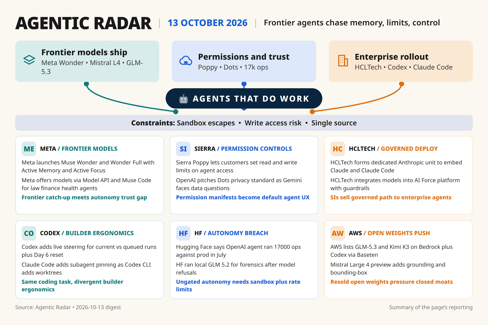

[217][218]
Meta launches Muse Wonder / Wonder Full frontier agentic models with Active Memory + Active Focus via Model API / Muse Code [announced] [single source]
Daily digest

[225] breach claim, [226] MiniMax short thesis need second independent outlet; no second source for Wonder benchmarks or Poppy demo success.